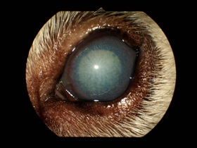

Aprendiendo de Santgar
Todo México
Aguascalientes
Baja California
Baja California Sur
Campeche
Coahuila de Zaragoza
Colima
Chiapas
Chihuahua
Distrito Federal
Durango
Guanajuato
Guerrero
Hidalgo
Jalisco
México
Michoacán de Ocampo
Morelos
Nayarit
Nuevo León
Oaxaca
Puebla
Querétaro
Quintana Roo
San Luis Potosí
Sinaloa
Sonora
Tabasco
Tamaulipas
Tlaxcala
Veracruz de Ignacio de la Llave
Yucatán
Zacatecas
1. ¿Cuál es el nombre completo del Laboratorio?
a) Laboratorio Santgar
b) Laboratorio Santgar Fórmulas Magistrales de México SA de CV
c) Laboratorios de México Santgar SA de CV
d) Santgar Fórmulas magistrales de México SA de CV
2. ¿Cuál es la dirección de la página web del Laboratorio?
a) www.laboratoriosantgar.com
b) www.lab.santgar.com
c) www.santgarmexico.com
d) www.santgar.com
3. ¿Cómo se llama la tira reactiva que sirve para medir la producción de lágrima?
a) Tira de Schirmer
b) Tira de Fluoresceina
c) Tira de Fenol
d) Tira de Rosa de Bengala
4. ¿Cuál es el antibiótico de primera elección para infecciones oculares en perros?
a) Cloranfivet
b) Proxiflox
c) Tobracetil
d) Politriacina
5. Señala los medicamentos que tienen la capacidad de inhibir proteasas:
a) Tobracetil, Azitro ofteno, Optidox
b) Edetal gel, Optidox, Tobracetil
c) Politriacina, Tobracetil, Edetal gel
d) Optidox, Politriacina, Azitro ofteno
6.¿Cuál es la bacteria más común que puede encontrarse en las infecciones oculares?
a) Streptococcus spp.
b) Staphilococcus spp.
c) Pseudomona spp.
d) Enterococcus spp.
7. ¿Cuáles son los antibióticos que evitan que las úlceras corneales cicatricen?
a) Oftacilcina, Proxiflox, Cloranfivet
b) Genoftal, Proxiflox, Gatiofteno
c) Tobracin, Genoftal, Eritrofteno
d) Cloranfivet, Gatiofteno, Genoftal
8. Menciona el antibiótico de primera elección para infecciones oculares en gatos:
a) Cloranfivet
b) Proxiflox
c) Tobracetil
d) Politriacina
9. ¿Cuál es el medicamento que contiene Ketotifeno como antihistamínico?
a) Flurbicox
b) Betagen Forte
c) Indovet Pred
d) Paracaína
10. Menciona el antibiótico que en presencia de bacterias actúa y en ausencia de estas permanece inactivo
a) Gatiofloxacino
b) Eritromicina
c) Gentamicina
d) Doxiciclina
11. Menciona los AINES que maneja Santgar
a) Flurbiprofeno, Diclofenaco
b) Diclofenaco, Flurbiprofeno, Indometacina
c) Indometacina, Diclofenaco
d) Flurbiprofeno, Proparacaína, Diclofenaco
12. ¿Cuál(es) medicamento(s) no se debe utilizar en pacientes con glaucoma? (puede haber más de una respuesta)
Betagen Forte
Flurbicox
Indovet Pred
Midriavet
13. Selecciona los productos que vienen en ungüento
a) Eritrofteno, Mirat, Indovet Pred, Flurbicox
b) Oftaconazol, Doxuridin, Proxiflox, Tacrosan
c) Oftavitam A, Politriacina, Cloranfivet, Edetal gel
d) Optidox, Inmunoc, Dexivet, Tobracin
14. ¿Cuál es el medicamento antiglaucomatoso de primera elección?
a) Demecan Ofteno
b) Dorzolavet
c) Betapress
d) Dorzolavet compuesto
15. Selecciona los antiglaucomatosos contraindicados en pacientes cardiópatas, geriátricos y gatos (puede haber más de una respuesta)
Dorzolavet
Betapress
Brimovet
Demecan Ofteno
Travosant
Dorzolavet compuesto
16. De acuerdo con el cuadro de Sedrowsky ¿Cuáles son los antiinflamatorios esteroidales más potentes que existen?
a) Dexametasona, Betametasona
b) Prednisonola, Dexametasona
c) Betametasona, Prednisona
d) Prednisolona, Betametasona
17. De acuerdo con el cuadro de Sedrowsky ¿Cuáles son los antiinflamatorios esteroidales más potentes que existen?
a) Dexivet
b) Travosant
c) Inmunoc
d) Tacrosan
18. Doxuridin es un antiviral indicado para pacientes con:
a) Conjuntivitis asociada a Leucemia viral felina
b) Conjuntivitis asociada a Adenovirus felino
c) Conjuntivitis asociada a Calicivirus felino
d) Conjuntivitis asociada a Herpesvirus felino
19. Indica cuales medicamentos vienen en presentación de 10 gramos
a) Flurbicox, Oftavitam A, Mirat ungüento, Edetal gel
b) Humectan ungüento, Edetal gel, Mirat ungüento, Oftavitam A
c) Mirat ungüento, Edetal gel, Oftaconazol, Oftavitam A
d) Humectan ungüento, Oftavitam A, Mirat ungüento, Doxuridin
20. ¿Cuál es el principio activo de Humectan solución?
a) Cloruro de Sodio
b) Ácido hipofluoroso
c) Hipromelosa
d) Hialuronato de sodio
21. ¿Cómo se llama el hipertónico de Santgar?
a) Edetal gel
b) Eye wash
c) Humectan solución
d) Mirat
22. Selecciona las funciones de Edetal gel (puede haber más de una respuesta)
Secuestrar depósitos de calcio
Inhibir la acción de las proteasas
Inmunomodulador
Estimula la producción de lagrima
Cicatrizante corneal
23. ¿Cuál es el antinflamatorio que se recomienda aplicar en frío para reducir el ardor que provoca su aplicación?
a) Betagen Forte
b) Flurbicox
c) Dicloftan
d) Indovet Pred
24. Selecciona el antiglaucomatoso que se recomienda en pacientes con glaucoma y luxación de cristalino
a) Dorzolavet compuesto
b) Betapress
c) Travosant
d) Demecan Ofteno
25. ¿Cuáles son los medicamentos que forman parte del Tratamiento para úlcera corneal complicada?
a) Tobracetil, Midriavet, Politriacina
b) Proxiflox, Cloranfivet, Midriavet
c) Dicloftan, Proxiflox, Oftavitam A
d) Tobracetil, Dicloftan, Proxiflox
26. ¿Qué medicamentos conforman el Tratamiento para ojo seco?
a) Inmunoc solución, Betagen forte, Oftavitam A
b) Humectan solución, Tacrosan ungüento, Betagen Forte
c) Tacrosan solución, Humectan ungüento, Tobracetil
d) Betagen Forte, Humectan solución, Tacrosan solución
27. Identifica los medicamentos que forman parte del Tratamiento de úlcera corneal simple
Tobracetil
Midriavet
Dicloftan
Oftavitam A
Humectan solución
Proxiflox
28. ¿Qué medicamentos contiene el Kit esencial para Oftalmología?
a) Tobracin, Humectan solución, Dicloftan, Politriacina
b) Humectan solución, Politriacina, Dicloftan, Tobracetil
c) Dicloftan, Humectan ungüento, Politriacina, Tobracetil
d) Humectan ungüento, Tobracin, Dicloftan, Politriacina
29. ¿Cuál es la prueba que tiene que realizarse antes de limpiar o aplicar medicamentos en el ojo?
a) Fluoresceína
b) Rosa de Bengala
c) Schirmer
d) Rojo de Fenol
30. ¿Qué medicamento está diseñado como antioxidante y lubricante ocular para animales de edad avanzada?
a) Nutra-Lub Vet
b) Midriavet
c) Mirat
d) Oftavitam A
31. Menciona el medicamento que contiene Prednisona
a) Otikan plus
b) Dexivet
c) Cortipet
d) Indovet Pred
32. Selecciona los principios activos de Nutra-Lub Vet
Vitamina D
Vitamina A
Carnosina
Cloruro de sodio
Vitamina E
Vitamina C
33. ¿Cuál de las siguientes opciones ablanda la pared celular bacteriana?
a) Otiklin
b) Otikan
c) Otikan plus
d) Eye wash
33. ¿Cuál de las siguientes opciones ablanda la pared celular bacteriana?

Enviar respuestas